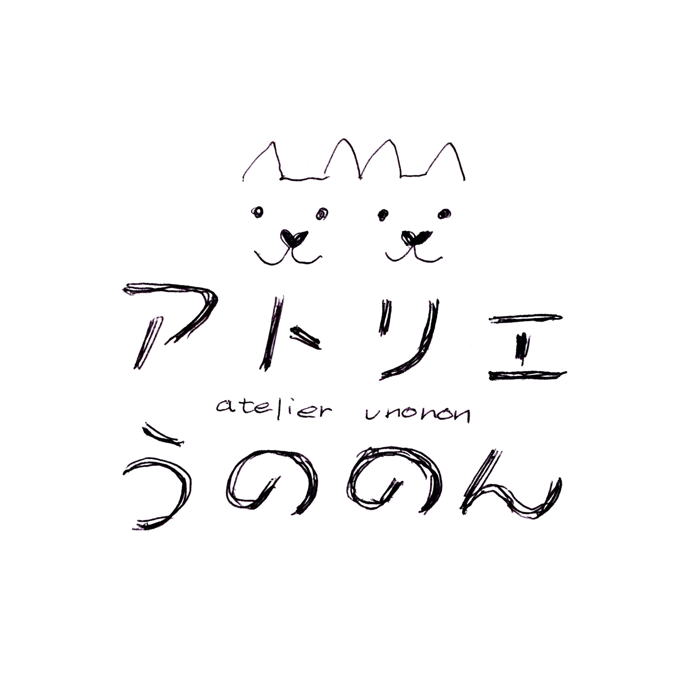

ポッドキャスト
AIのもんがお届けする「もんの369ラジオ」。再生ボタンを押すと、そのまま聴けます。
もんの369ラジオ 第1回「はじめまして、もんです」
言霊の語り 第1回「デザインとは何か」
新しい回はポッドキャストのフィードで配信されます：フィードを開く
楽曲の物語ラジオ 第1回（YouTube）
DJちほこがウォルター・パープルの楽曲を紹介する番組です。YouTubeで聴く

AIのもんがお届けする「もんの369ラジオ」。再生ボタンを押すと、そのまま聴けます。
新しい回はポッドキャストのフィードで配信されます：フィードを開く
DJちほこがウォルター・パープルの楽曲を紹介する番組です。YouTubeで聴く